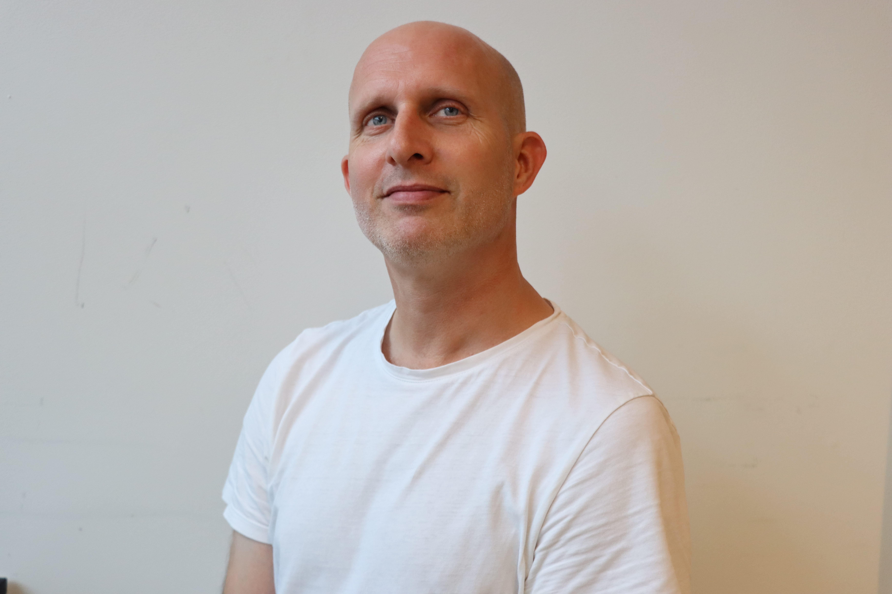
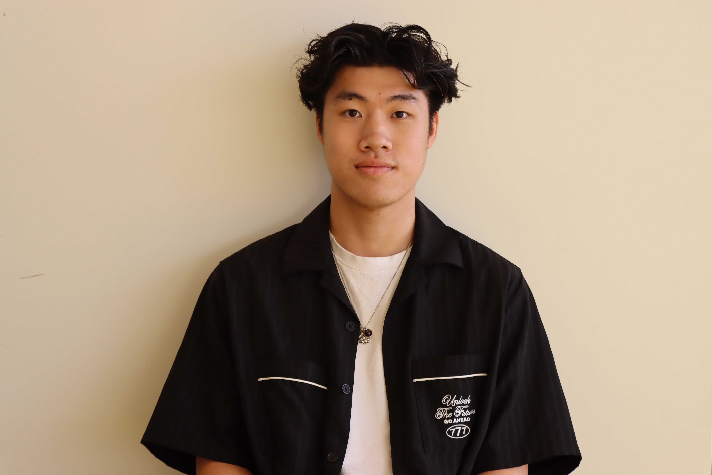
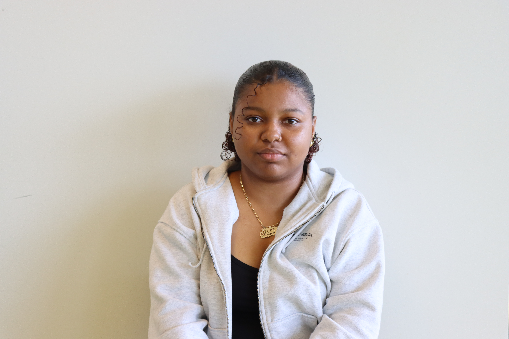

de squad

Koop
Favoriete quote: "A grid is like underwear, you wear it but it's not to be exposed." - Massimo Vignelli, graphic design
visitekaartje
Queeny
Favoriete quote: “You can take your boy out the hood but you can't take the hood out the homie” - Snoop Dogg
visitekaartje
Sun
Favoriete quote: "All we have to decide is what to do with the time that is given us." - Gandalf
visitekaartje
Rowynn
Favoriete quote: "I don’t like knowing people in the context of things. "Oh, that’s the person I work out with. That’s the person I’m in a book club with. That’s the person I did that show with." Because once the context ends, so does the friendship." - Jenette Mccurdy, I'm glad my mom died
visitekaartje
Rosa
Favoriete quote: "We're almost there and nowhere near it. All that matters is that we're going." - Lorelai Gilmore, Gilmore Girls
visitekaartje
Aliya
Favoriete quote: "A person who is comfortable alone is dangerous—you cannot control them with the threat of losing people." -unknown
visitekaartje